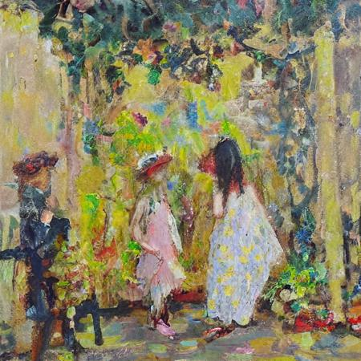
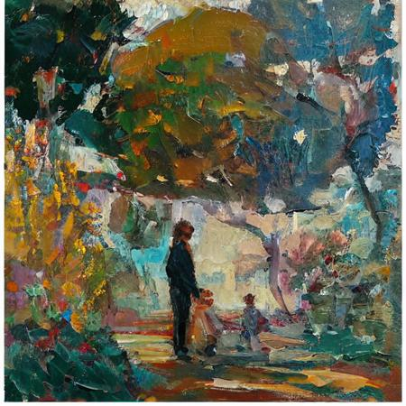
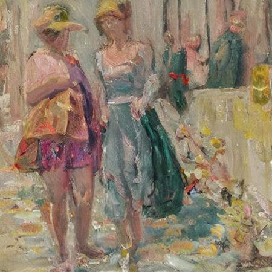
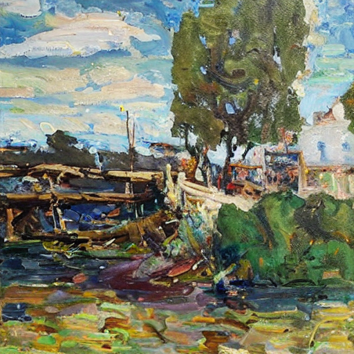

炼丹炼丹
Stable Diffusion LoRA 训练心得
2024/3/11 by DKZ

  
1839年8月19日，法兰西学术院举行科学院和美术院联席会议，宣布认定法国人路易·达盖尔的“银版摄影法”的发明。 1840年11月14日莫奈出生于巴黎拉菲特街。 1874年3月，在巴黎市中心的卡普辛大街，借用摄影家纳达尔的工作室举办了第一次印象派画展。
摄影发明的时候就有人惊呼，绘画已死！ 绘画没死，又活了100多年。 如今AI发明了，又来？ 没有什么会被替代，但会有新的东西出现。 当然催生印象派的并不完全是摄影，也许它替代了一部分给贵族画肖像一类的活计。但更直接的是工业革命之后中产阶级兴起，绘画主题由宫廷肖像，转变成了市民生活，绘画主体由深宫大院搬到室外的草地上，写生的形式缩短了绘画时间放弃了对具象的追求开始使用更加概括的绘画语言，室外变换莫测的光线使得画家开始使用更加丰富的色彩越来越多的用冷暖变换来表达明暗的关系。于是催生了我爸最喜欢的印象派。
我们处在新的工业革命中，AI是蒸汽机。 它的作用机制不是在于替代画家，而是会产生新的东西，淘汰旧的生产力。 而且它是作用于整个社会的，没有人可以置身事外，现在AI会画画做视频，但游戏三维建模做的不行，但它只要会做视频它就会抢占电影cg的市场，原来做电影cg的建模师不就挤到游戏行业去了嘛。他会写代码，就有程序员去开滴滴，不管智能驾出没出来出租车行业就已经被改变了。
最近沉迷炼丹，用我爸爸的绘画作品训练了一个LoRA。发现炼丹这个比喻真的很恰当，各种参数之间的关系类似玄学，训练本身则更像一个试错的过程。AI也是一样，在查了一堆资料之后似乎搞明白了扩散模型，以及图片训练和生成的过程，但真要问原理是啥我想我答不上来。可能AI研究本身就是探究人类的智能尝试复原人类的认知结构，而这个结构可能只是从混沌中演化出来的。所以不敢说真的悟出了什么道理，只是有些失败的教训给各位道友分享，希望各位少走弯路。
使用的工具是kohya_ss这个工具。
打标是非常关键的一步使用 wd14 ，和我自己做的一个手动打标插件。另外数据集的选择非常关键，由于我爸爸的画作并非具象写实的那一派，很多画面的元素不能被很好的提取tag，而且在图片生成时提示词的作用也不是很明显。所以我尝试把同意题材的作品放入一个数据集中训练，这样在使用的时候，这个lora也能充当触发提示词的作用。另外训练数据集的大小也是一个相当关键的参数，直接影响到训练的步数效率和训练结果。
底模选择stable diffusion v1.5，因为大的底模需要显存更高，训练时间更久，一些混合模型或微调过的模型又可能没啥普适性。
训练LoRA方式尝试了，iA3，loHa，loKr。iA3得出的LoRA很小，效果还行，而且需要调的参数很少，推荐入门可以尝试，但在comfyUI上使用出现了一些问题。loha和lokr可以自己选择参数，我的建议是从默认参数开始，根据需要调整。另外不要试图通过控制变量的方法穷举出最好的效果，这些参数之间存在一些微妙的联系，我愿称之为玄学，改变一定量有时可能会产生巨大反应，有时可能一点效果没有。
最后我想说在绘画上，对于好的定义，本来就是模糊的。对应AI风格训练也应如此，loss最小不代表最好或者最像。有时这事要随缘，各位道友切莫强求，以免坏了道心。
以下是参数部分，是个人经验，只针对曾新油画作品风格学习：
步长（steps）
steps=(image_nums*repeat)*epochs/batch_size
这个公式包含四个非常重要的参数，这四个参数会直接影响需要训练的步数，步数就是时间就是效率，也直接关系到学习的好坏。
- imagenums：和数据集有关，不要太大超过100可以分成两个，我一般是60-80
- repeat：可以高一点20-30，不能太低了
- epochs：因为设置每隔n个轮次保存，所以可以用这个控制最终steps。太高会糊，浪费时间，可以看sample手动中断。（可配合余弦退火防止炼糊）
- batchsize:同时训练几张图片，会提高显存占用，受到显存限制我一般设为2
学习率（lr）
选定了优化器后使用默认的就好，选Prodigy设为1可以自动调整学习率，另外LR Scheduler选cosinewithrestarts，可以在同一次训练中得到更多不同的效果。
秩（Rank）
这个参数会关系到LoRA的大小，更大可能容纳更多东西？一般默认就好。
另一个有关的是Alpha，学的不像可以提高Rank，降低Alpha，过拟合可以降低Rank，提高Alpha。
还有一些和精度相关的，我也推荐默认参数。